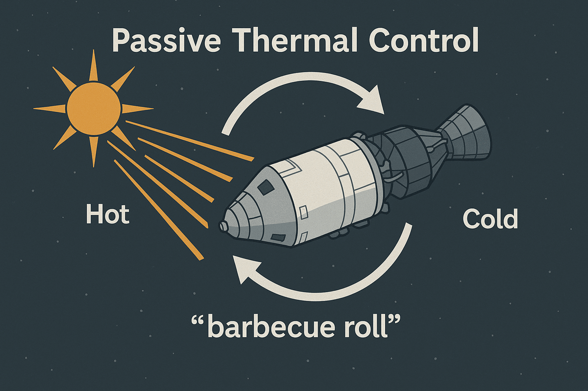

Passive Thermal Control

While the crew battled the other crises, a quieter life-saver had been at work for days: Apollo 13 was turning in a slow spin — the "barbecue roll" — the whole way home.
The Problem: Space Is Both Freezing AND Boiling
In space, there's no air to spread heat around. Whatever faces the Sun bakes; whatever faces away freezes:
Temperature Extremes:
Hot enough to boil water
Colder than Antarctica's coldest day
Temperature difference: a 500°F swing from one side of the ship to the other!
What Happens Without Rotation?
- 🔥 Sun side: electronics overheat, seals fail, windows crack from thermal stress
- ❄️ Shadow side: batteries lose capacity, propellants freeze in their lines, mechanisms jam
Result: a spacecraft slowly wrecked by its own hot and cold spots.
The Solution: Passive Thermal Control (PTC)
Apollo used a simple, brilliant fix: rotate slowly so every side takes its turn in the Sun and in shadow.
🔄 How the "Barbecue Roll" Works
The Maneuver:
- Rotation axis: the spacecraft's long axis — like a rotisserie chicken
- Rotation rate: about 3 revolutions per hour (one lazy rotation every 20 minutes)
- Method: small RCS (Reaction Control System) thruster pulses start the spin, then occasional pulses keep it steady
Why It Works:
Think of a hot dog on a grill: leave it still and one side burns while the other stays raw; keep it turning and it cooks evenly. Same physics in space — the slowly rolling hull stayed at moderate, safe temperatures.
⚠️ PTC Challenges on Apollo 13
Problem #1: A Wounded, Lopsided Spacecraft
The damaged Service Module was still venting oxygen and water. The escaping gas acted like tiny rocket engines, constantly nudging the slow spin into a wobble.
Problem #2: Hard to Check Their Orientation
Normally the autopilot and the spacecraft's gyroscopic platform held the PTC attitude automatically — star sightings only re-checked the platform's alignment now and then. With those systems powered down, and a glittering debris cloud hiding the real stars, the crew had to set up and watch the roll largely by hand.
Problem #3: Limited Thruster Fuel
Every correction pulse burned propellant that might be needed for course corrections later. Keep the roll steady, but spend as little as possible.
Solution:
Mission Control worked out a modified, mostly manual PTC procedure. The crew timed the rotation and nudged it with short thruster pulses every few hours.
🎯 Why PTC Was Critical for Apollo 13
A Colder Ride Than Planned:
Apollo 13 was planned as a ten-day mission with a lunar landing. Instead it flew about six days straight out and back — with the Command Module shut down and nearly every heater off to save power. The slow roll was almost the only thermal control left.
Critical Systems That Needed Protection:
- 💧 Water tanks: couldn't be allowed to freeze — needed for drinking and equipment cooling
- 🚀 Thruster propellants: freeze at surprisingly warm temperatures (around +12 to +19°F) — a frozen thruster is a dead thruster
- 🪟 Windows: thermal shock can crack glass
- 🛡️ Heat shield: nobody knew how days of deep cold-soak might affect it
Crew Comfort (Barely):
Even with PTC working, the LM cabin fell to around 50°F, and the powered-down Command Module dropped to about 38°F. Without the roll, it would have been far worse.
Still miserable, but survivable.
Success!
Despite the challenges, the barbecue roll held for the entire journey home. Every critical system stayed within its temperature limits.
The Manual Process
Every few hours, the crew timed a full rotation (target: 20 minutes), fired a short thruster pulse if the spin had drifted, logged the fuel used, and reported to Houston.
Routine, repetitive background work — on top of every other survival task, for days on end.
"We're rotating like a chicken on a spit. Every 20 minutes, we'd go from looking at the Sun to looking at black space to looking at the Sun again. It was hypnotic. But it was keeping us alive." — Fred Haise
🎬 Dramatization — not a documented quote.
🔬 The Engineering Genius
- ✓ Simple concept: just spin the ship
- ✓ No heaters, coolers, or pumps needed
- ✓ Tiny fuel cost: a few thruster pulses every few hours
Sometimes the best solutions are the simplest ones.
The barbecue roll wasn't glamorous.
But it was one more piece of the survival puzzle that worked.
And in space, "it worked" is the highest praise.